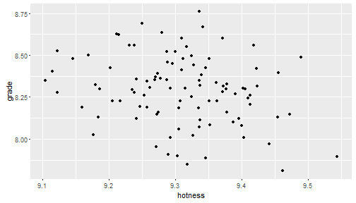

DO YOU LIKE WORDS?
of COURSE you do!
DO YOU LIKE CLOUDS?
who DOESN'T like clouds?
THEN YOU ARE GOING TO LOVE
my project, that you've already seen and formed a (hopefully!) positive opinion on, which is called...
Gene Kaufman
Data Newbie
of COURSE you do!
who DOESN'T like clouds?
my project, that you've already seen and formed a (hopefully!) positive opinion on, which is called...
There are many different ways to build WordClouds; I based mine on a technique described on r-bloggers.com.
I wanted to make a fun project that would hopefully bring cheer into the world and smiles to the faces of my graders. I realize that my projects (both the Shiny app as well as this Slidify slide deck) are pretty silly, but I hope that you realize that this is just a reflection of my personality and not of my skillset.
Just for fun, let's compare how ridiculously good-looking the last 100 people were to the grade they gave me...
require(ggplot2)
mydf<-data.frame(grade=rnorm(n = 100,mean=8.3,sd=0.2),hotness=rnorm(n = 100,mean=9.3,sd=0.1))
qplot(hotness,grade,data=mydf)

Ok... that was pretty pointless, but it's a neat graph, huh?
Here's a quick look at the fake data that I generated on the previous slide:
summary(mydf)
## grade hotness
## Min. :7.809 Min. :9.105
## 1st Qu.:8.157 1st Qu.:9.257
## Median :8.300 Median :9.311
## Mean :8.292 Mean :9.310
## 3rd Qu.:8.423 3rd Qu.:9.372
## Max. :8.760 Max. :9.544
Thank you for your time, and good luck in your continued studies!